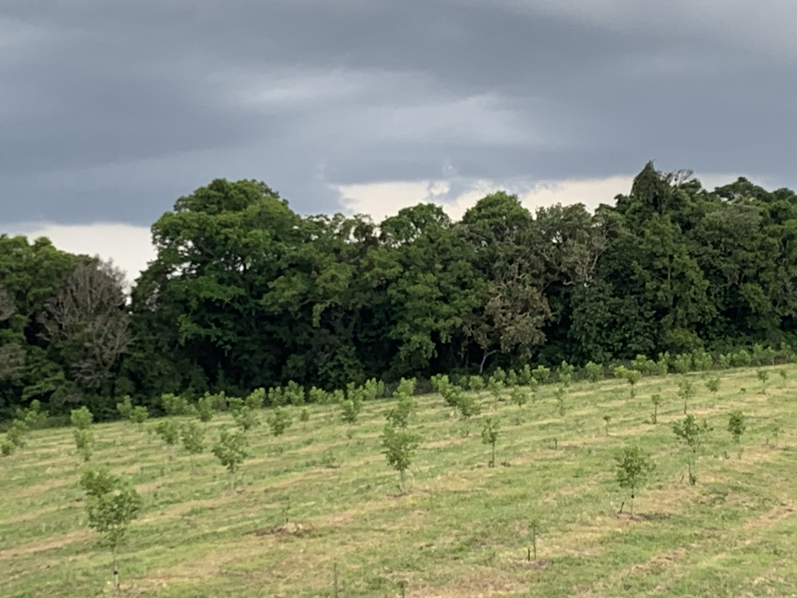
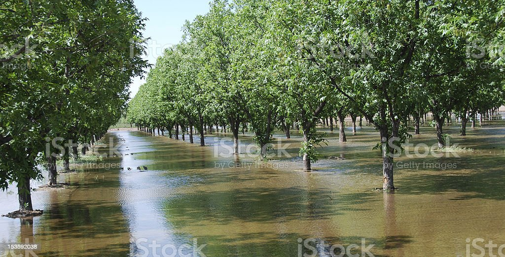
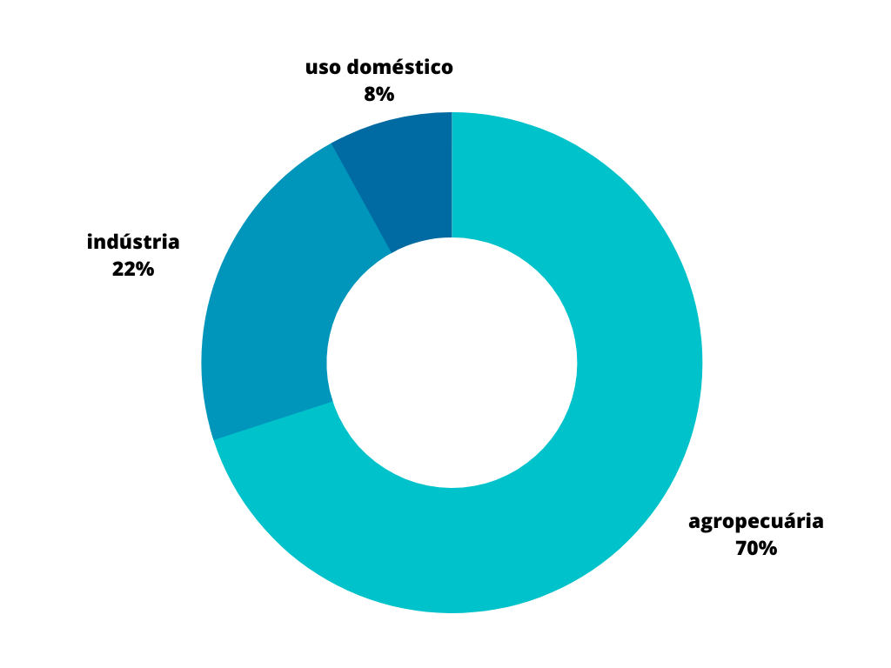

Irrigação nas platações de nogueiras
 Plantação de nogueiras na granja ipê, Rio Pardo - RS.
A escassez da água é um assunto sempre muito comentado, pois seria impossível viver sem ela no mundo. A agricultura é o setor responsável por consumir a maior quantidade de água no mundo, cerca de 70% de toda a água consumida, além de consumir é o setor também que mais desperdiça água. O previsto para o ano de 2030 é que esse número só aumente, podendo aumentar até 24% na agropecuária.
A noz-pecã é um fruto vindo do México e dos Estados Unidos, sua comercialização no Brasil começou nos anos de 1960 a 1970, na maioria das vezes é encontrada em mercados nozes importadas do Chile por seu cultivo ainda não ser ainda tão comum no Brasil, o que é um grande incentivo para agricultores brasileiros conseguir preencher esses espaços, além do crescimento desse mercado e ter um bom retorno financeiro.
Problemas que a irrigação pode causar

A irrigação de qualquer produto muitas vezes é o que salva as plantações das secas e do calor, as nogueiras precisam de bastante água para conseguir crescer e produzir seus frutos, porém ela em excesso pode causar muitos prejuízos. É de extrema importância saber o momento certo e a quantidade para não ter problema algum e conseguir um bom lucro.
Alguns dos problemas:
- Irrigar em excesso ou pouco visualmente: É importante usar um sensor de umidade, pois um solo que aparenta estar seco não indica que ele realmente esteja, é preciso saber do solo mais a fundo.
- Salinização do solo: Isso é, quando a concentração de sais se eleva prejudicando o rendimento econômico, podendo reduzir sua produtividade.
- Desperdício de água: Quando acontece a irrigação em excesso. muita água é gasta e desperdiçada, podendo afetar a produtividade e gastando água que poderia ser usada para outras coisas.
Escassez de água no mundo
Um dos grandes problemas nos dias de hoje é a falta de água em nosso planeta, segundo a ONU estima-se que até 2050, 5 bilhões de pessoas ficarão sem água, ou seja, a metade da população mundial. Geralmente aprendemos pequenas coisas no nosso dia a dia para economizar água, como fechar a torneira para escovar os dentes, captar água da chuva para lavar o carro, tomar banhos curtos, entre vários outros conselhos que com certeza se todas as pessoas seguirem essa estimativa iria aumentar. Oque nem todos sabem é que a agricultura e agropecuária é o setor que mais consome água, responsável por 70% da água utilizada pelo ser humano e quase metade dessa água é desperdiçada, segundo a UOL caso o meio rural diminuísse o consumo em 10%, o volume seria suficiente para abastecer duas vezes a população mundial.

É preciso entender as nogueiras
A Juglans regia, conhecida popularmente como nogueiras geralmente são cultivadas pelo seu fruto que possui vários benefícios a saúde, e sua madeira que é de boa qualidade. as nogueiras podem chegar até aproximadamente 30 metros de altura e de 2 a 3 metros de diâmetro, ela é uma espécie muito ramificada, ou seja, possui muitos galhos em sua copa.
As nogueiras têm floração masculina e feminina, as duas possuem uma flor, porém apensas a feminina tem o fruto. Normalmente a produção dos frutos acontece apenas por volta dos 10 anos, ou seja, 10 anos depois da nogueira ser semeada e nascer.
Para cultivar a Juglans regia é inportante saber algumas coisas:
- As nogueiras não são muito exigentes com temperaturas, porém são bastante sensíveis a geadas;
- Elas requerem um solo com profundidade, arenoso, bem drenado, irrigado e rico em matéria orgânica;
- Podar a árvore, para conseguir controlar o seu tamanho e retirar galhos velhos, as podas também podem ajudar a estimular a frutificação;
- Para ter uma boa produção de noz é recomendado deixar o solo sempre húmido, cuidando para que não fique encharcado.